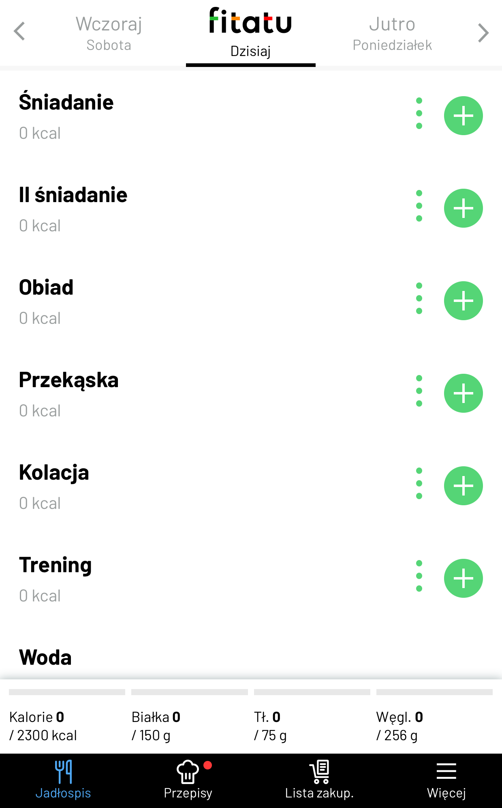

Dieta
Zapotrzebowanie kaloryczne
Dla przykładu:
Twoje zapotrzebowanie wynosi 2800kcal. Aby zdrowo chudnąć powinieneś zjadać najmniej 2300kcal dziennie.
Dzienna podaż makroskładników
Węglowodany - jest to makroskładnik który daje nam najwiecej siły. Każdy gram węglowodanów również zawiera 4 kcal
Tłuszcze - Makroskładnik niezbędny do zachowania naszej gospodarki hormonalnej. 1 gram tłuszczu zawiera 9 kcal.
Teraz obliczymy makroskładniki pod naszą osobę.
Dla przykładu:
Przyjmijmy że twoja ustalona liczba kalorii to 2300 przy przykładowej wadze 75kg. Zacznijmy od policzenia białka.
Jego ilość powinna sie kształtować w przedziale 1.6g - 2.5g na każdy kilogram masy ciała. Czyli np.
- Ważysz 75kg * 2g białka = 150g białka
- Każdy gram białka to 4 kcal wiec 150g * 4kcal = 600kcal
Liczba tłuszczu dla większości ludzi to 1g na kilogram masy ciała.
- 75kg * 1g tłuszczu = 75g tłuszczu
- Każdy gram tłuszczu to 9kcal wiec 75g * 9kcal = 675kcal
Teraz policzymy węglowodane.
- Zostało nam 1025kcal. 1g węglowodanów to 4kcal wiec 1025kcal : 4 = 256g węglowodanów
Jak liczyć kalorie?
Będą ci do tego potrzebne dwie rzeczy:
- Darmowa aplikacja "Fitatu"
- Waga kuchenna.
Na początku ustaw ilosc kalorii oraz makroskładniki. Następnie pozostało juz tylko klikniecie plusika przy posiłku i wpisanie lub zeskanowanie tego co jemy oraz w jakiej ilości. Pamiętaj że produkty ważymy przed obróbką termiczną.

Na koniec
Poniżej przedstawiamy warte uwagi materiały które powiększą waszą wiedzę w dziedzinie zdrowego odżywiania.